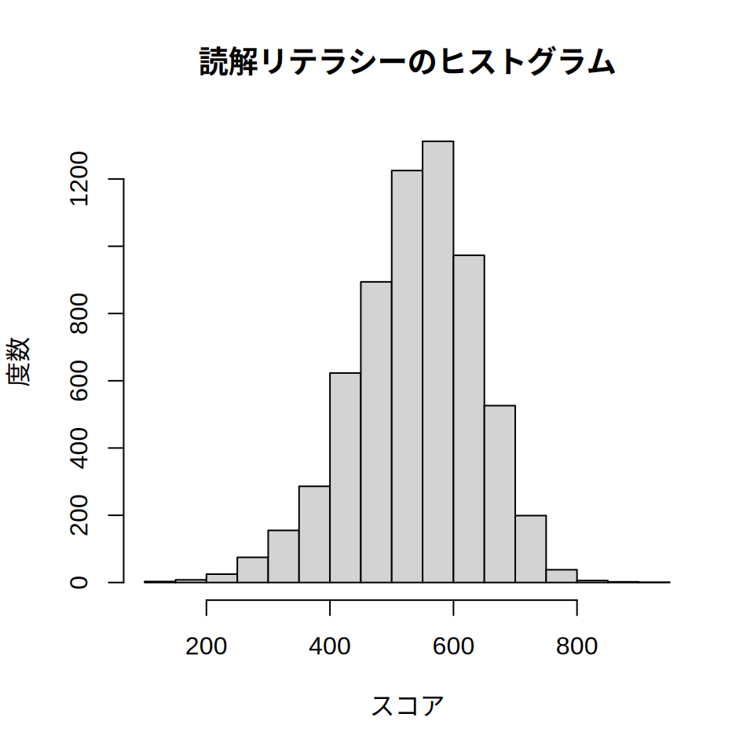
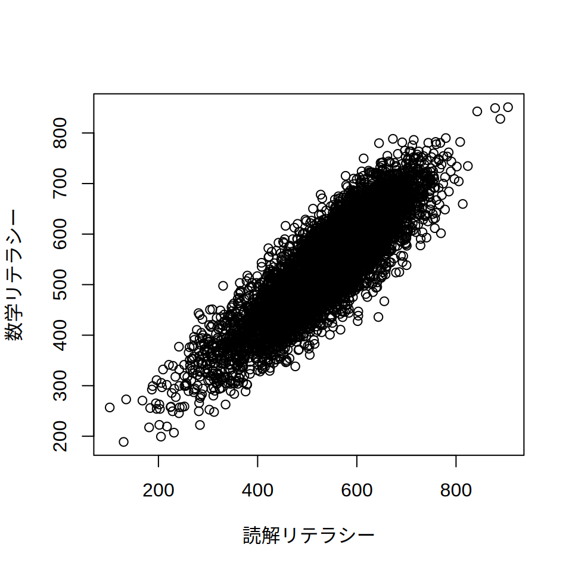
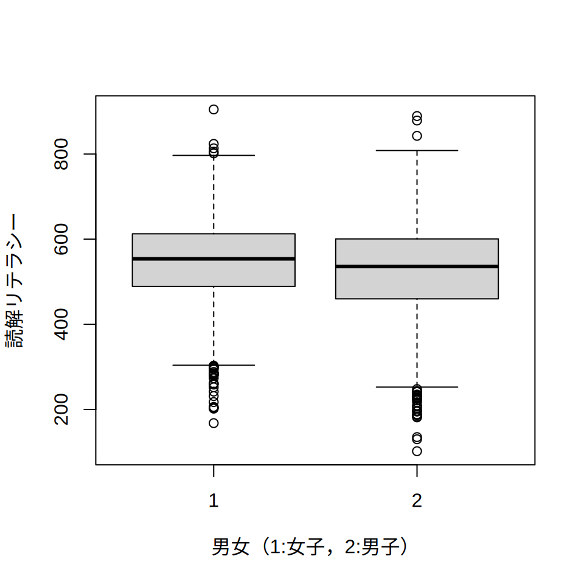
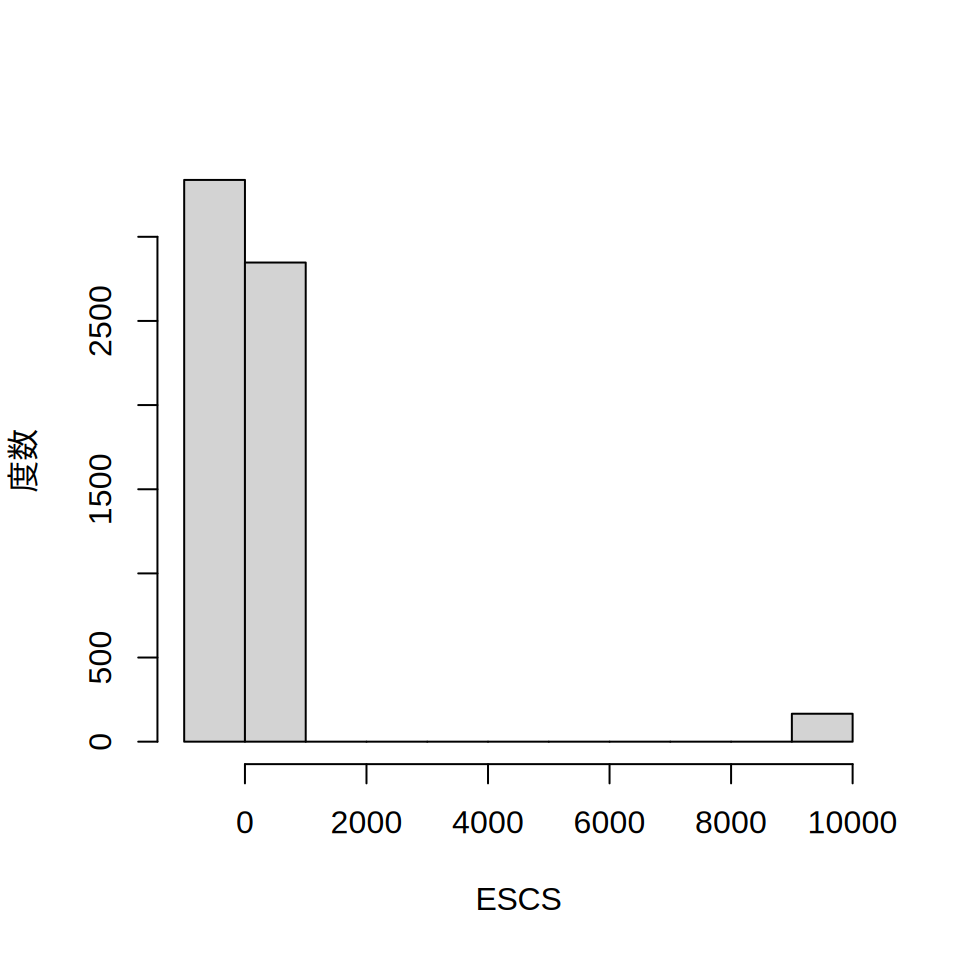
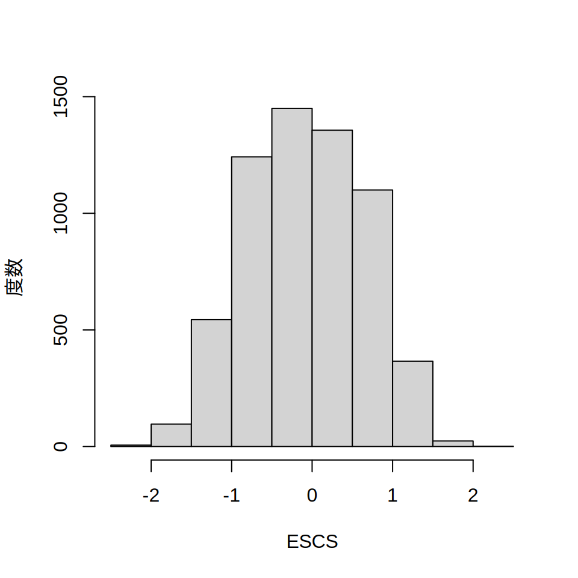

id <- 1:7 # 出席番号
score <- c(50, 55, 60, 65, 70, 999, 999) # 成績。999は欠測
gender <- c(1, 1, 1, 99, 2, 2, 2) # 性別。1が女子，2が男子
dat <- data.frame(id, score, gender)6 データフレーム
6.1 データフレームとは
ここまでは，Rのベクトル・リストの機能を使って学んできました。 ただ，本格的に社会調査のデータを扱うには，この二つだけでは力不足です。 社会調査の分析では， さまざまな情報（ID・性別・学力etc）を格納したベクトルを生成し， それらをまとめて扱う必要があるからです。
ここで必要になるのが，データフレームという機能です。 学力調査の場合，少なくとも次のような変数をまとめて扱う必要があります。
- ID: 生徒一人ひとりの番号。出席番号など
- 成績: 一人ひとりの成績
- 個々人の情報: たとえば性別やアンケートに対する回答など
今，id・成績（score）・性別（gender）という変数が含まれた 仮の学力調査のデータを考えましょう。 簡単のため，idは「1番から7番」， 成績は「50点・55点・60点・65点・70点・欠測・欠測」， 性別は「女子・女子・女子・欠測・男子・男子・男子」とします。 欠測というのは，何らかの理由でたまたまデータが得られなかった箇所のことです。
Rでは，data.frameという関数を使ってデータフレームを作成します。 以下の例では，id，score，genderという3つのベクトルを作成し， その結果をdata.frame関数で1つにまとめています。
ちなみに欠測の箇所は，999という値を入れています。 これは社会調査の慣例で，欠測には99や999といった 「ありえない」数値を入れることでデータが存在しないことを示しているのです。
6.2 データフレームの取り扱い
さて，データフレーム（今回はdatというオブジェクト）の扱い方を考えてみましょう。 たとえばnames関数を使うと，データフレーム内の変数名を知ることができます。 また，head関数を使うと，データフレームの上6行の情報を得ることができます。 上から何行の数値がほしいかは，head関数の引数にn = 4といった形で指定することができます。
names(dat)[1] "id" "score" "gender"head(dat) id score gender
1 1 50 1
2 2 55 1
3 3 60 1
4 4 65 99
5 5 70 2
6 6 999 2head(dat, n = 4) # 上から4行を表示 id score gender
1 1 50 1
2 2 55 1
3 3 60 1
4 4 65 99データフレーム内の変数にアクセスする場合は，$マークを使います。 datの成績（score）が見たい場合は，dat$scoreかdat[["score"]]と入力します。 あるいは，成績は前から2列目に格納されているので，dat[, 2]としても構いません。 ちなみにdat[, 2]はデータフレームの前から2列目を意味します。 dat[3, ]とすると3行目ですし，dat[2, 2]とすると2行目の2列目の数字（55）が返ってきます1。
dat$scoreもdat[["score"]]もdat[, 2]も同じ情報が返ってきます2。 この中では，$を使う方法がもっとも簡単です。 試しにdat$と入力してみると，その理由がわかるかもしれません。
dat$score[1] 50 55 60 65 70 999 999dat[["score"]][1] 50 55 60 65 70 999 999dat[, 2] # 2列目[1] 50 55 60 65 70 999 999dat[3, ] # 3行目 id score gender
3 3 60 1dat[2, 2] # 2列目の2行目（55）[1] 55データフレーム内の特定の値を修正したいという場合もあるかもしれません。 たとえば，「本当は1人目の成績は40点だったのに間違えて50点と入力してしまった！」といった場合です。 こういう場合は，次のような方法を使います。 まず1人目の成績は，dat$score[1]とすることで表示できます。 ここで，dat$score[1] <- 40とすると，1人目の成績が40に置き換わります。 ちなみにdat[2, 2]のように行と列を指定しても構いません。
dat$score[1][1] 50dat$score[1] <- 40
dat$score[1] 40 55 60 65 70 999 999dat[2, 2] <- 60 # 2行2列（＝2人目の成績）を指定しても可
dat$score[1] 40 60 60 65 70 999 9996.3 欠測値の扱い方
データフレームを作ったら，最初に正しく作成できているかどうか確認したほうがよいでしょう。 たとえばtableという関数を使うと，ベクトル内の要素を数えることができます。 これを度数分布と呼びます。 度数（データの数）という言葉はよく使うので，覚えておくとよいでしょう。 以下ではtable関数を使って，別変数（gender）の度数分布を作成してみます。
dat$gender[1] 1 1 1 99 2 2 2table(dat$gender)
1 2 99
3 3 1 1が男子・2が女子・99は欠測ですから， 順に3・3・1で適切に入力できているようです。 一方で，成績変数（score）はこのままでは少々問題があります。 たとえば，成績の平均を計算することを考えましょう。 今のままでは，おかしな平均値が算出されてしまいます。
dat$score[1] 40 60 60 65 70 999 999mean(dat$score)[1] 327.5714326という平均が出力される理由は，欠測の部分に 999を入力しているからです。 Rは999が欠測ということがわかりませんから，999点だと思って平均を計算してしまい， 数値がおかしくなっているのです。 これを防ぐには，Rにscoreの999は欠測であり，平均を計算するときは省いてほしい旨を 伝える必要があります。
ただ，この処理は少々面倒です。 まず，dat$scoreの999の箇所を特定する必要があります。 ここで条件を付けて要素にアクセスする 方法を思い出してみてください。 dat$score == 999と入力すれば，dat$scoreというベクトルの中の999の要素の位置を特定できます。 そのため，dat$score[dat$score == 999]とすることで999の要素を特定できるのでした。 後は，ここにRで欠測を意味するNAという値を格納すれば， Rにデータに欠測があることを伝えられます。
dat$score[dat$score == 999][1] 999 999dat$score[dat$score == 999] <- NA
dat$score[1] 40 60 60 65 70 NA NAではもう一回，平均を計算してみましょう。 今度はNAになるはずです。欠測が含まれているものに対して平均を計算することはできませんので， これは当然と言えば当然です。 そこで，欠測の箇所は除いて平均を計算するように伝えます。 これは，mean関数の引数に，na.rm = TRUEを与えることで実現できます。
mean(dat$score)[1] NAmean(dat$score, na.rm = TRUE)[1] 59これでようやく，成績の平均を計算することができました。 ちなみに，男女別の平均を計算することも可能です。 Rでは，tapplyという関数を使うことで，グループごとに処理が可能です。 tapplyの引数には，順に「処理したい値」「個々の属するグループ」 「行いたい処理」を与えます。 今回は男女別の成績の平均を計算したいので，順にscore, gender, meanを与えることになります。 欠測を無視するために，最後にna.rm = TRUEも与える必要があります。
tapply(dat$score, dat$gender, mean, na.rm = TRUE) 1 2 99
53.33333 70.00000 65.00000 6.4 LSAのデータファイルを扱う
ここまでは説明のために，自分で作成したデータフレームを使っていました。 しかし実際の分析では， すでに用意されたデータをデータフレームとして読み込むことが一般的です。
6.4.1 データの読み込み
以下では，PISA2012の日本のデータをRに読み込むことを考えます。 普通は自分のPCに保存されているデータを使うのですが， そのためにはフォルダやパスといった概念を知っておく必要があります。 フォルダやパスの説明は少し大変なので， 本書では，私がウェブ上に用意したcsvファイルをRに読み込むことにします。 ここで言うcsvファイルとは，カンマ（,）で項目を区切ったデータのことで， 社会調査ではよく使われます。
Rにcsvファイルを読み込む際は，read.csvという関数を使います。 今回はウェブ上にあるcsvファイルを読み込むので， csvファイルのある場所（url）をread.csvの引数に設定します。 読み込んだデータは，jpn2012というデータフレームに格納しています。
url <- "https://raw.githubusercontent.com/kawa5902/LSAdata/refs/heads/main/pisa2012stuJPN.csv"
jpn2012 <- read.csv(url)6.4.2 データフレームの確認1
先ほど読み込んだjpn2012の中身を，names関数やhead関数を使って確認してみましょう。 かなりデータファイルが大きいので，ここでは最初の10列だけ表示しています。
names(jpn2012)[1:10] # names関数。変数名を出力 [1] "CNT" "SUBNATIO" "STRATUM" "OECD" "NC" "SCHOOLID"
[7] "StIDStd" "ST01Q01" "ST02Q01" "ST03Q01" head(jpn2012, 10)[, 1:10] # head関数。最初の10人分のデータを出力 CNT SUBNATIO STRATUM OECD NC SCHOOLID StIDStd ST01Q01 ST02Q01 ST03Q01
1 JPN 3920000 JPN0101 1 39200 1 1 10 1 9
2 JPN 3920000 JPN0101 1 39200 1 2 10 1 12
3 JPN 3920000 JPN0101 1 39200 1 3 10 1 4
4 JPN 3920000 JPN0101 1 39200 1 4 10 1 6
5 JPN 3920000 JPN0101 1 39200 1 5 10 1 12
6 JPN 3920000 JPN0101 1 39200 1 6 10 1 4
7 JPN 3920000 JPN0101 1 39200 1 7 10 1 11
8 JPN 3920000 JPN0101 1 39200 1 8 10 1 8
9 JPN 3920000 JPN0101 1 39200 1 9 10 1 10
10 JPN 3920000 JPN0101 1 39200 1 10 10 1 1$を使って，個々の変数にアクセスすることも可能です。 たとえば，ST03Q01変数（これは生まれ月の変数です）を見てみます。 すべて表示すると数千人分のデータになるので，ここでは最初の12人分だけ表示します。
jpn2012$ST03Q01[1:12] # $を使ってデータにアクセス [1] 9 12 4 6 12 4 11 8 10 1 6 1PISA2012は，日本では高校1年生（正確には学校に通う15歳）を対象に実施されています。 高校1年生の生まれ月はどのように分布しているのでしょうか。 table関数を使うことで，標本となった人たちの生まれ月の度数分布を確認します。
table(jpn2012$ST03Q01)
1 2 3 4 5 6 7 8 9 10 11 12
521 456 501 532 533 521 574 560 541 547 510 555 多少のばらつきはありますが，特定の誕生月の子どもが多いということはなさそうに思えます。 パーセント表示にしたほうが見やすいかもしれません。 table関数の出力を，prop.table関数の引数にすることで割合を表示することができます。 ただ，素の表示は見づらいので100倍して100分率にし， さらにround関数を使って小数桁数を制御したほうがよいでしょう。
tb <- table(jpn2012$ST03Q01)
prop.table(tb)
1 2 3 4 5 6 7
0.08203433 0.07179972 0.07888521 0.08376634 0.08392379 0.08203433 0.09037947
8 9 10 11 12
0.08817509 0.08518344 0.08612817 0.08030231 0.08738781 # 100倍する
prop.table(tb) * 100
1 2 3 4 5 6 7 8
8.203433 7.179972 7.888521 8.376634 8.392379 8.203433 9.037947 8.817509
9 10 11 12
8.518344 8.612817 8.030231 8.738781 # round関数で小数桁数を1桁に限定
round(prop.table(tb) * 100, 1)
1 2 3 4 5 6 7 8 9 10 11 12
8.2 7.2 7.9 8.4 8.4 8.2 9.0 8.8 8.5 8.6 8.0 8.7 どの生まれ月の人も，だいたい7%から9%となっています。 多少の増減はありますが，特定の月が極端に多いということはなさそうです。
さらに，生まれ月を男女別に集計したいということもあるかもしれません。 table関数は，複数の引数を設定することで，男女別の集計にも対応できます。 これをクロス集計と呼びます。
table(jpn2012$ST04Q01, jpn2012$ST03Q01)
1 2 3 4 5 6 7 8 9 10 11 12
1 263 225 226 249 268 247 263 264 249 275 226 266
2 258 231 275 283 265 274 311 296 292 272 284 289パーセント表示がしたいという場合は，先ほどと同じくprop.table関数を使います。 引数の1は，横方向に100%にしてほしいという意味です。 2に設定すると，縦方向に100%で表示されます。
tb <- table(jpn2012$ST04Q01, jpn2012$ST03Q01)
prop.table(tb, 1)
1 2 3 4 5 6
1 0.08705727 0.07447865 0.07480967 0.08242304 0.08871235 0.08176101
2 0.07747748 0.06936937 0.08258258 0.08498498 0.07957958 0.08228228
7 8 9 10 11 12
1 0.08705727 0.08738828 0.08242304 0.09102946 0.07480967 0.08805031
2 0.09339339 0.08888889 0.08768769 0.08168168 0.08528529 0.08678679こちらもround関数に渡すことで桁数を抑制できます。 次の例では数値を100倍したあとに，小数桁数を1桁に設定しています。
round(prop.table(tb, 1) * 100, 1)
1 2 3 4 5 6 7 8 9 10 11 12
1 8.7 7.4 7.5 8.2 8.9 8.2 8.7 8.7 8.2 9.1 7.5 8.8
2 7.7 6.9 8.3 8.5 8.0 8.2 9.3 8.9 8.8 8.2 8.5 8.7男女によって多少のズレはありますが，女子だから（あるいは男子だから）といって 特定の出生月に偏るといったことはなさそうに思えます。
6.4.3 データフレームの確認2
続いて，成績の変数も確認してみましょう。 PISAは読解リテラシー・数学リテラシー・科学リテラシーという3領域を調査しています。 ここでは，読解リテラシーの成績が格納されたPV1READという変数を見てみます。 PV1が何かは今は気にしなくて構いません （PVについては，推算値法の章で扱います）。
最初に，summary関数を使って，最大値・最小値・平均値などを確認しましょう。
summary(jpn2012$PV1READ) Min. 1st Qu. Median Mean 3rd Qu. Max.
101.8 473.9 545.1 537.8 606.1 904.8 hist関数を使うと成績の分布を視覚的に確認することができます。
hist(jpn2012$PV1READ, main = "読解リテラシーのヒストグラム", xlab = "スコア", ylab = "度数")
場合によっては，読解リテラシーと数学リテラシーの関係を確認したいということもあるでしょう。 この場合は，plotという関数が使えます。 ここでは，読解（PV1READ）と数学（PV1MATH）の関係を見てみましょう。
plot(jpn2012$PV1READ, jpn2012$PV1MATH, xlab = "読解リテラシー", ylab = "数学リテラシー")
読解リテラシーは男女によって差があるのではないか，と思う人もいるかもしれません。 こういう場合，たとえば箱ひげ図が使えます。 Rでは，boxplotという関数を使うことで，箱ひげ図が描けます。
boxplot(jpn2012$PV1READ ~ jpn2012$ST04Q01, xlab = "男女（1:女子，2:男子）", ylab = "読解リテラシー")
わずかですが，女子のほうが読解リテラシーが高い傾向があるようです。 先ほど紹介したtapply関数を使えば，男女の平均値の差を示すことも可能です。
tapply(jpn2012$PV1READ, jpn2012$ST04Q01, mean) 1 2
548.8090 527.7306 女子（1）が548.8に対し，男子（2）が527.7点なので，女子のほうが20ポイントほど読解リテラシーが高いようです。
6.4.4 データフレームの確認3
読み込んだデータに欠測値がある場合も珍しくありません。 たとえばPISA2012のESCSという変数を見てみます。 ESCS はEconomic Social and Cultural Statusの略で， 子どもの家庭環境を示す変数です。 ESCSは，子どもに「お父さんやお母さんの学歴」 「お父さんやお母さんの職業」「家庭のある本の冊数」などを尋ね， その回答をもとに作成されています。 数値は調査に参加したOECD加盟国の平均が0・標準偏差1に調整されていますので， 0だと平均的な家庭の子ども，2だと相当に恵まれた家庭に育った子ども， -2だと厳しい状況にある子ども・・・といった解釈ができるでしょう。
さて，PISA2012のESCS変数では9999が欠測値になっています。 お父さんやお母さんの職業・学歴を答えたくないという子もいますから， 欠測があることは珍しいことではありません。 ただ，欠測をそのままにしておくと，平均や標準偏差の計算結果がおかしくなります。 実際，summary関数を使うと，中央値と平均値が大きくズレるなど， おかしなデータになっていることが確認できます。 ヒストグラムを見ても，0付近にほとんどのデータが固まっているのに 10000付近に僅かにデータが存在するなど，変なグラフになってしまいます。
summary(jpn2012$ESCS) Min. 1st Qu. Median Mean 3rd Qu. Max.
-2.35 -0.61 -0.06 261.27 0.53 9999.00 hist(jpn2012$ESCS, main = "", xlab = "ESCS", ylab = "度数")
このままでは分析に支障がでるので，9999が欠測であることをRに伝えましょう。
jpn2012$ESCS[jpn2012$ESCS == 9999] <- NA欠測値をNAに指定すると，summary関数やhist関数の出力が適切なものに修正されます。
summary(jpn2012$ESCS) Min. 1st Qu. Median Mean 3rd Qu. Max. NA's
-2.35000 -0.63000 -0.09000 -0.07668 0.48000 2.04000 166 hist(jpn2012$ESCS, main = "", xlab = "ESCS", ylab = "度数")
読み込んだデータに欠測値がある場合，気づかないまま分析すると誤った結果につながりかねません。 データを読み込んだときは，tableやsummaryあるいはhistといった関数を使い， おかしなデータが含まれていないか確認する習慣を付けたほうがよいでしょう。
行と列がよくわからないという人は，「行列で縦か横か迷ったら」をご覧ください。↩︎
なぜ同じことをする方法がいくつもあるのかと思う人もいるでしょうが， それぞれ異なった使い道があるのです。 本書では，Replication Methodで具体例を示します。↩︎